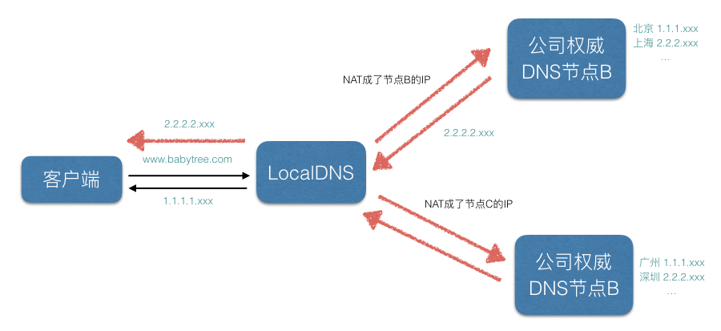

1、技术背景
运营商的LocalDNS服务往往存在域名缓存、解析转发、递归出口NAT等域名解析异常的问题：
- 域名缓存
1、指向缓存：LocalDNS会缓存公司权威DNS的一些指向以提升访问速度，如下图
2、内容缓存：LocalDNS可能会缓存具体指向的内容，可以植入一些广告（注入了一段JS代码），还有最近常见的联通流量提醒（右下角那个泡泡）等等。

- 解析转发
有些部分小运营商为了节省资源，就直接将解析请求转发到了其它运营的递归LocalDNS上去了，导致域名解析错误，用户跨网访问
- 递归出口NAT（地址转换）
LocalDNS递归出口NAT指的是运营商的LocalDNS按照标准的DNS协议进行递归，但是因为在网络上存在多出口且配置了目标路由NAT，结果导致LocalDNS最终进行递归解析的时候的出口IP就有概率不为本网的IP地址

HttpDNS是为移动客户端量身定做的基于Http协议和域名解析的流量调度解决方案，专治LocalDNS解析异常以及流量调度不准。
HttpDNS主要解决三类问题：
LocalDNS劫持
减少平均访问延迟
降低用户连接失败率
1、 LocalDNS劫持:
由于HttpDNS是通过ip直接请求http获取服务器A记录地址，不存在向本地运营商询问domain解析过程，所以从根本避免了DNS劫持问题。 （对于http劫持，可以通过对称／非对称加密、“加盐”、MD5校验数据的完整性，时效性，保证传输数据的安全性）
2、减少平均访问延迟:
由于是ip直接访问省掉了一次domain解析过程，（即使系统有缓存速度也会稍快一些‘毫秒级’）通过智能算法排序后找到最快节点进行访问。
3、降低用户连接失败率:
通过算法降低以往失败率过高的服务器排序，通过时间近期访问过的数据提高服务器排序，通过历史访问成功记录提高服务器排序。如果ip(a)访问错误，在下一次返回ip(b)或者ip(c) 排序后的记录。（LocalDNS很可能在一个ttl时间内（或多个ttl）都是返回记录
2、技术原理
HttpDNS的原理非常简单，主要有两步：
A、客户端直接访问HttpDNS接口，获取业务在域名配置管理系统上配置的访问延迟最优的IP。（基于容灾考虑，还是保留次选使用运营商LocalDNS解析域名的方式）
B、客户端向获取到的IP后就向直接往此IP发送业务协议请求。以Http请求为例，通过在header中指定host字段，向HttpDNS返回的IP发送标准的Http请求即可。
3、阿里云、腾讯云服务对比
腾讯云
https://www.qcloud.com/product/hd
从原理上来讲，HTTPDNS只是将域名解析的协议由DNS协议换成了Http协议，并不复杂。但是这一微小的转换，却带来了巨大的收益：
由于绕过了运营商的LocalDNS，用户解析域名的请求通过Http协议直接透传到了HTTPDNS服务器IP上，用户在客户端的域名解析请求将不会遭受到域名解析异常的困扰。
HTTPDNS能直接获取到用户IP，通过结合DNSPod自有专利技术生成的IP地址库以及测速系统，可以保证将用户引导的访问速度最快的IDC节点上。
接入HTTPDNS的业务仅需要对客户端接入层做少量改造，无需用户手机进行root或越狱；而且由于Http协议请求构造非常简单，兼容各版本的移动操作系统更不成问题；总而言之，就是以最小的改造成本，解决了业务遭受域名解析异常的问题，并满足业务精确流量调度的需求。
HTTPDNS提供可靠的域名解析服务，业务可将自有调度逻辑与HTTPDNS返回结果结合，实现更精细化的流量调度。比如指定版本的客户端连接请求的IP地址，指定网络类型的用户连接指定的IP地址等。
总结来说，HttpDNS能有效地避免由于移动互联网用户所使用的LocalDNS异常导致的无法访问到您预期的最优接入点，最终导致用户访问您的业务出现异常。
阿里云
https://help.aliyun.com/document_detail/30102.html?spm=5176.doc30141.6.539.YNLli9
HTTPDNS使用HTTP协议进行域名解析，代替现有基于UDP的DNS协议，域名解析请求直接发送到阿里云的HTTPDNS服务器，从而绕过运营商的Local DNS，能够避免Local DNS造成的域名劫持问题和调度不精准问题。
相比于传统的DNS，HTTPDNS主要有下面两个优势：
- 防劫持：绕过运营商Local DNS，避免域名劫持，让每一次访问都畅通无阻。
- 精准调度：基于访问的来源IP，获得最精准的解析结果，让客户端就近接入业务节点。
4、客户端接入
腾讯云
官方文档：https://www.qcloud.com/document/product/379/6469
先在网站上注册
引入Framework
设置Plist
代码里注册

实际请求
1
2
3
4
5
6
7
8
9
10
11std::vector<unsigned char*> ipsVector = MSDKDns::GetInstance()->WGGetHostByName((unsigned char *)"www.qq.com");
if (ipsVector.size() > 1){
NSString* ipv4 = [NSString stringWithUTF8String:(const char*)result[0]];
NSString* ipv6 = [NSString stringWithUTF8String:(const char*)result[1]];
if (![ipv6 isEqualToString:@"0"]) {
//使用建议：当ipv6地址存在时，优先使用ipv6地址
//TODO 使用ipv6地址进行连接，注意格式，ipv6需加方框号[ ]进行处理，例如：http://[64:ff9b::b6fe:7475]/
} else {
//使用ipv4地址进行连接
}
}注意：
使用ipv6地址进行连接时，注意格式，ipv6需加方框号[ ]进行处理，例如：
1
http://[64:ff9b::b6fe:7475]/*******
使用建议：
1、ipv6为0，直接使用ipv4地址连接
2、ipv6地址不为0，优先使用ipv6连接，如果ipv6连接失败，再使用ipv4地址进行连接，注：返回给业务的地址格式为：”dns=ipv4,ipv6”，如果没有ipv6地址，返回为0，例如:dns=192.168.1.1,0
阿里云
官方文档：https://help.aliyun.com/document_detail/30141.html?spm=5176.doc30103.6.580.SETg7n
先在网站上注册App 下载对应SDK（1.1版本以上的）
引入对应framework
代码里注册

预设对应服务的Host 以便SDK提前解析，减少后续解析域名时请求的时延

实际请求中，首先获取IP地址如果有的话就替换Host访问，没有或者失败的话考虑降级，用LocalDNS访问。
如果是IPv6地址替换的时候要加 [ ] 如： http://[2001:db8:c000:221::]/path IPv4不用
实际应用中需要解决的问题
每个请求前需要知道每个请求的IP地址，并作对应host替换。 考虑广告等地址是否也需要替换
Https 请求需要处理发送链接前SSL ／TLS握手，替换过的HOST会导致验收不同过. (但目前项目中没有用到校验)
发送HTTPS请求首先要进行SSL/TLS握手，握手过程大致如下：
- 客户端发起握手请求，携带随机数、支持算法列表等参数。
- 服务端收到请求，选择合适的算法，下发公钥证书和随机数。
- 客户端对服务端证书进行校验，并发送随机数信息，该信息使用公钥加密。
- 服务端通过私钥获取随机数信息。
- 双方根据以上交互的信息生成session ticket，用作该连接后续数据传输的加密密钥。
上述过程中，和HTTPDNS有关的是第3步，客户端需要验证服务端下发的证书，验证过程有以下两个要点：
- 客户端用本地保存的根证书解开证书链，确认服务端下发的证书是由可信任的机构颁发的。
- 客户端需要检查证书的domain域和扩展域，看是否包含本次请求的host。
如果上述两点都校验通过，就证明当前的服务端是可信任的，否则就是不可信任，应当中断当前连接。
当客户端使用HTTPDNS解析域名时，请求URL中的host会被替换成HTTPDNS解析出来的IP，所以在证书验证的第2步，会出现domain不匹配的情况，导致SSL/TLS握手不成功。
webView的跳转，需要重写NSURLProtocol去实现。